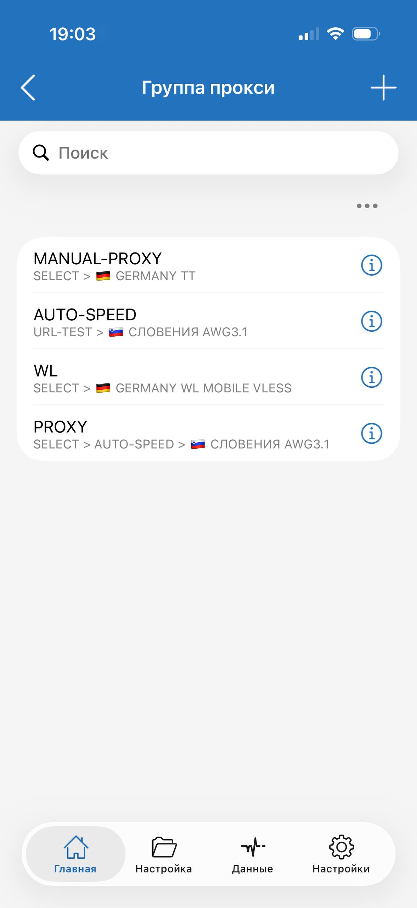
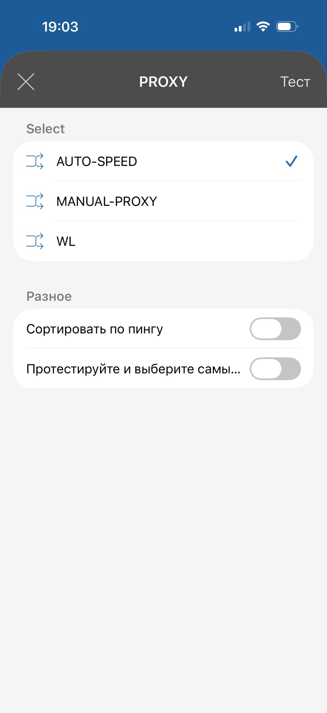
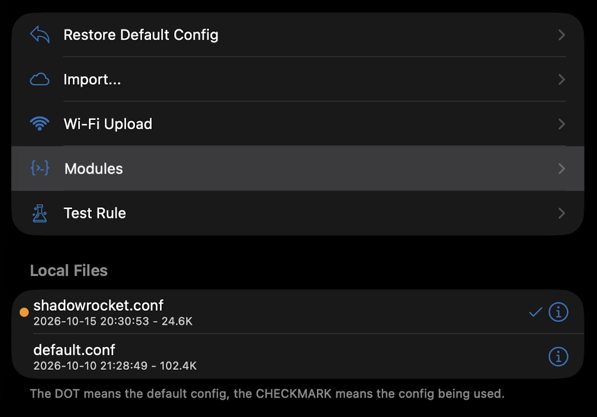

MotivatoPotato
Настройки маршрутизации для ваших приложений
Shadowrocket
Конфиг для iPhone, iPad и Mac. Серверы добавляются своей подпиской.
Добавить в Shadowrocket AWG / TrustTunnel → ShadowrocketКак работает конфиг
Российские домены и IP — напрямую. Остальные соединения — через выбранную группу PROXY. Отдельные правила задают исключения и блокировку.
Конфиг задаёт маршруты, а серверы добавляются отдельно — своей подпиской. После импорта выбери конфиг и установи глобальную маршрутизацию «Конфигурация».
Правила и исключения на GitHub ↗
Три группы и один селектор
PROXY — главный переключатель: в нём выбирается одна из трёх групп.
- AUTO-SPEED — включил и забыл. Автоматически тестирует серверы и выбирает быстрый доступный. Вручную переключать узлы для обычной работы не нужно.
- WL — если остальные серверы не работают. Выбери WL в PROXY, затем нужный сервер внутри WL.
- MANUAL-PROXY — если нужна конкретная страна или сервер. Выбери сервер внутри этой группы, затем MANUAL-PROXY в PROXY.

Обычный режим: PROXY → AUTO-SPEED. Выбери один раз после добавления конфига — дальше выбор сервера работает автоматически.

Модули Shadowrocket · 8 дополнений
Модули дополняют основной конфиг и могут переопределять его настройки и правила. Правила модулей имеют приоритет над правилами конфига.
01_01DNS Override ExampleПример для локальной копии с вашими DNS, без URL обновления.Пример 15_01Apple ProxyВсе правила сервисов Apple через выбранную политику PROXY.Добавить 15_02OpenAI USAChatGPT, Codex и Dots через авто-выбор серверов USA.Добавить 15_03Twitch No AdvertiseАвтоматический выбор сервера для Twitch, чата и видео.Добавить 20_01GFN DirectКаталог и вход — через KZ/UA/AM; игровой поток — DIRECT.Добавить 20_02WeChat DirectWeChat и необходимые ему CDN напрямую.Добавить 20_03Google AI Smart DNSДоступ к Google AI со Smart DNS из DNS Override Example.Добавить 90_01Anti-AdvertisingПодключает списки блокировки рекламы.ДобавитьПорядок и настройки модулей
Модули применяются в порядке расположения: верхние имеют приоритет. В Config → Modules расставь их сверху вниз по возрастанию номера NN_MM в имени. Номера на кнопках и в модулях совпадают; пропуски допустимы. DNS Override Example (01_01) должен быть самым верхним, Anti-Advertising (90_01) — последним. Имя само не меняет порядок в приложении.
DNS Override Example (01_01) и Google AI Smart DNS (20_03) работают в связке. Сначала открой пример (01_01) и скопируй его текст. В Config → Modules создай новый локальный модуль и вставь текст. После direct-dns-server = впиши адрес Smart DNS, который поддерживает доступ к Gemini, и только затем включи модуль. После dns-server = можно вписать свой приватный DNS вместо 9.9.9.9. Для direct-dns-server нужен именно Smart DNS. Резервный DNS остаётся из конфига. Персональные адреса вписывай только в локальную копию. Не импортируй публичный пример повторно поверх заполненного модуля. В примере нет URL обновления.

OpenAI USA автоматически тестирует узлы с USA в названии из всех подписок и выбирает сервер. Проверка — каждые 180 секунд. Для обновления модуля используй его публичный URL в Shadowrocket. Стабильность Dots зависит от доступных серверов.
Затем включи Google AI Smart DNS (20_03) и поставь его выше Anti-Advertising (90_01). Этот модуль направляет запросы Gemini напрямую, чтобы соединение использовало адреса, полученные через Smart DNS из DNS Override Example. Он также задаёт маршруты для других сервисов Google AI и googleapis.com.
Clash / Mihomo
Для FlClash, Clash Verge Rev и Clash Mi.
Собрать локальный конфигДобавьте свои подписки и скачайте YAML. Обработка в браузере; доступна офлайн-версия.
INCY
Определяют, какой трафик идёт напрямую, а какой — через VPN. Добавляются в приложение INCY.
Основной профиль Обратный профиль · RU-VPNЧем отличаются профили
Основной: российские ресурсы — мимо VPN, остальной мир — через VPN. Есть отдельные исключения и блокировка.
Обратный: для подключения из-за рубежа. Российские сайты — через сервер с российским выходным IP, остальной мир — напрямую.
Кнопки передают маршрут в INCY для добавления и активации. Подробнее на GitHub ↗
Это настройки маршрутизации, а не готовый VPN. Серверы и подписка добавляются отдельно.
VPN и Smart DNS
Здесь можно оформить подписку на VPN. Smart DNS для DNS Override Example я тоже беру в этом сервисе. Названия и фильтры прокси-групп настроены под обозначения узлов в его подписке. Конфиг работает и с другими подписками, если имена серверов соответствуют фильтрам групп.
VPN в Telegram VPN в браузереРеферальные ссылки — переход поддерживает автора страницы.
Проверить подключение
2ip.io Яндекс ИнтернетометрДля основного профиля при подключении из России: Интернетометр показывает Россию, а 2ip.io — страну выбранного VPN-сервера. Так можно проверить разделение маршрутов.